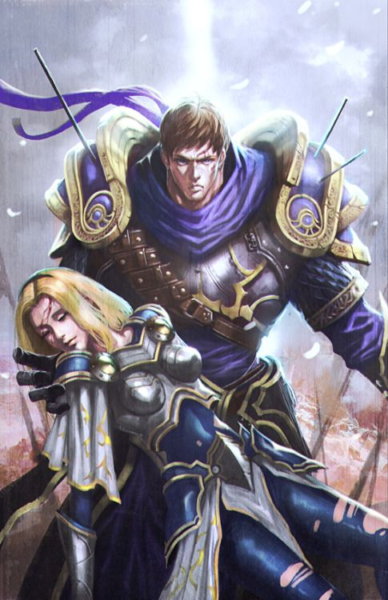

ТАНКИ ПРИНИМАЮТ УДАР НА СЕБЯ
Танки славятся способностью принимать на себя удары, которые могли бы убить более слабых союзников.
League of Legends – это соревновательная интенсивная игра в жанре "экшен-стратегия", в которую можно играть как в одиночку, так и с друзьями. Эта игра создана для тех, кто любит добиваться победы любой ценой.
Бои лицом к лицу
Готовьтесь! Чтобы сокрушать врагов в мелких стычках и в масштабных сражениях 5 на 5 игроков, вам понадобятся стратегическое мышление, молниеносные рефлексы и навыки командной игры.
Разрабатывайте стратегию, развивайтесь
Игра постоянно обновляется, в нее добавляются карты и игровые режимы, а в Лигу вступают новые чемпионы. В этой игре вас ограничивает только собственная фантазия.
Разрабатывайте стратегию, развивайтесь
Технологии подбора игроков в League of Legends всегда смогут предложить вам подходящих соперников – не важно, играете ли вы против ботов или уже начали восхождение к вершинам Лиги.
Сражайтесь с честью
Играйте честно, и вы получите от товарищей особую награду за поведение, достойное настоящего спортсмена.
Войдите в мир esports
League of Legends – самая активная площадка для состязаний в мире. В рамках игры проходит множество всемирных турниров, включая престижный чемпионат, где профессиональные игроки сражаются за миллионные призы.
Крупнейшее в мире сетевое игровое сообщество
Вступите в крупнейшее в мире игровое сообщество: заводите друзей, собирайте команды, сражайтесь с десятками миллионов соперников по всему миру, а потом обменивайтесь стратегиями на reddit, YouTube и игровых форумах